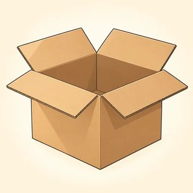
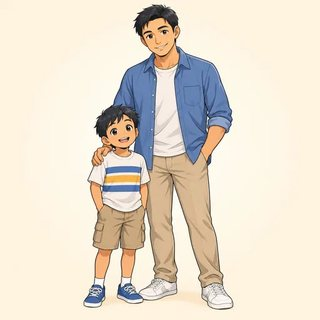

People, Places & Things
Say where people are from. Name the things around you. Talk about a family. You can talk about you, or about a new person. You choose.
✏️ Write · 👂 Listen · 🗣️ Say · 👥 Work with a partner · 📖 Read
Mistakes are OK. They help you learn. At home, open the online lesson and press 🔊 to hear the words.
The Verb "To Be": Countries & Nationalities
Class 4- Brazil → Brazilian
- Japan → Japanese
- Mexico → Mexican
- France → French
- China → Chinese
- Egypt → Egyptian
- Italy → Italian
- Spain → Spanish
- Germany → German
- the USA → American
- the UK → British
- Korea → Korean
- India → Indian
✏️ More countries (from our class): → →
Country = a place. Nationality = a person from the place. Both start with a CAPITAL letter.
| ✅ Yes | ❌ No | ❓ Question |
|---|---|---|
| I am (I'm) | I'm not | Am I…? |
| he / she / it is (he's, she's, it's) | he isn't | Is she…? |
| you / we / they are (you're, we're, they're) | they aren't | Are you…? |
| Question | Yes | No |
|---|---|---|
| Are you Brazilian? | Yes, I am. (not "Yes, I'm") | No, I'm not. |
| Is he from Mexico? | Yes, he is. | No, he isn't. |
| Where are you from? | I'm from Mexico. (country) I'm Mexican. (nationality) | |
- I from Brazil.
- She a teacher.
- They from Korea.
- We happy.
- He Egyptian.
- you from India?
- Leo Italian.
- You and Sofia friends.
Example: He is French. → He isn't French.
- She is from Japan. →
- They are American. →
- I am from Spain. →
- You are a student. →
| 1. China | a. German | |
| 2. Spain | b. British | |
| 3. Germany | c. Chinese | |
| 4. the UK | d. Italian | |
| 5. Italy | e. Spanish | |
| 6. Mexico | f. Mexican |
- from / you / where / are / ? →
- Japan / is / from / she →
- he / is / Brazilian / ? →
- not / I'm / from / Italy →
- Are you Mexican? — Yes, I'm / I am.
- Is she from India? — No, she isn't / she not.
- Are they British? — Yes, they are / they're.
- Is he Chinese? — No, he isn't / he aren't.
A: Hi! I'm Leo.
B: Hello, Leo. I'm Sofia. Nice to meet you.
A: Nice to meet you too. Where are you from, Sofia?
B: I'm from Mexico. I'm Mexican. And you?
A: I'm from Italy. I'm Italian.
B: Oh, nice! Is your friend Italian too?
A: No, he isn't. He's from France. He's French.
🗣️ Now say it again. Change the names and the countries.
Choose: me or a new person (an identity card). Both are OK.
Me today: I'm . I'm from . I'm .
Stand up. Meet 5 people. Ask: What's your name? Where are you from?
| Name | Country | Nationality |
|---|---|---|
| 1. | ||
| 2. | ||
| 3. | ||
| 4. | ||
| 5. |
🗣️ Tell your group: "This is ______. He's / She's from ______."
Write 3 sentences: I'm… I'm from… I'm… Then write 1 sentence about a friend: He's / She's from…
- ☐ say am, is, are with I, he, she, they…
- ☐ ask and answer "Where are you from?"
- ☐ say a country and a nationality, with a capital letter
- ☐ answer "Yes, I am." / "No, I'm not."
Write 2 sentences. Which word is hard for me: am, is, or are?
This & That, a/an & Everyday Objects
Class 5 a pen
a pen a pencil
a pencil a book
a book a notebook
a notebook a phone
a phone a bag
a bag a key
a key a cup
a cup a table
a table a chair
a chair a door
a door a window
a window
a box a bus
a bus- a watch
 an apple
an apple- an orange 🍊
 an umbrella
an umbrella an egg
an egg
| Near 👉 | Far 👉👉 | |
|---|---|---|
| One | This is a pen. | That is a door. |
| Many | These are keys. | Those are windows. |
| a + consonant sound | an + vowel sound (a, e, i, o, u) |
|---|---|
| a pen · a book · a cup · a bag | an apple · an orange · an egg · an umbrella |
| + s | + es (after s, x, ch, sh) | y → ies |
|---|---|---|
| pen → pens · key → keys | box → boxes · bus → buses · watch → watches | baby → babies · city → cities |
❓ What's this? → It's a phone. · What are these? → They're keys. · Is this a pen? → Yes, it is. / No, it isn't.
- book
- apple
- umbrella
- chair
- orange
- phone
- egg
- key
- pen →
- box →
- watch →
- baby →
- bus →
- keys → (one)
- cities → (one)
- notebook →
- A pen is in your hand. → is a pen.
- Two chairs are far, across the room. → are chairs.
- Some apples are in front of you. → are apples.
- A door is far away. → is a door.
- A cup is next to you. → is a cup.
1. What are these?
2. What's this?
3. Is this a pen?
4. Are these books?
Picture 1 = many keys. Picture 4 = many books.
- This / These are my keys.
- That is / are a window.
- It's a / an orange.
- Those are box / boxes.
A: What's this?
B: It's a cup.
A: And what's that, over there?
B: That's a window.
A: Okay. What are these?
B: They're keys.
A: Is this an apple?
B: No, it isn't! It's an orange.
A: Ha! You're right. Thank you!
Close your eyes. Put your hand in the bag. Touch one thing. Your group asks: "Is this a key?" You say: "Yes, it is!" or "No, it isn't. It's a…"
👥 Then work with a partner: ask "What's this?" and "What are these?" about your desk card. ✏️ Write the words here:
Look around your home. Write 8 sentences. Use This is a… · That is a… · These are… · Those are…
- ☐ name 8 things with a or an
- ☐ use this and that for one thing
- ☐ use these and those for many things
- ☐ make plurals: pens, boxes, babies
- ☐ ask "What's this?" and "What are these?"
Look at your room. Write 2 sentences. Use one an word and one plural.
My Family & Possessives
Class 6- mother (mom)

father (dad)- sister
- brother
- son
 daughter
daughter grandmother (grandma)
grandmother (grandma) grandfather (grandpa)
grandfather (grandpa)- aunt
- uncle
- cousin
- parents
- wife · husband
- partner
- children (kids)
- baby
Families are big and small. Friends can be family too. 💛
| I | you | he | she | it | we | they |
|---|---|---|---|---|---|---|
| my | your | his | her | its | our | their |
👀 Look at the owner: Tom has a sister → his sister. Anna has a brother → her brother.
| Owner + 's + thing | have / has |
|---|---|
| Anna's brother · Tom's phone · my father's car two parents → my parents' house | I / you / we / they have he / she / it has |
🗣️ This is my sister. · These are my parents. · Who's this? · Her name is… · His name is…
- Tom is happy. His / Her sister is here.
- Anna loves his / her brother.
- We live with our / their grandparents.
- My friends are here. Our / Their children are outside.
- Look at the dog. It's / Its name is Rex.
- Excuse me, is this your / you're phone?
Example: the brother of Anna → Anna's brother
- the car of my father →
- the phone of Tom →
- the bag of Lina →
- the house of my parents →
- My mother's mother is my .
- My father's brother is my .
- My aunt's daughter is my .
- My parents' son (not me) is my .
- My mother's sister is my .
- I two sisters.
- She a brother.
- We three children.
- Carlos a son.
Rosa and Carlos are married. They have two children, Luis and Maria. Maria has a son, Leo.
- Carlos is Rosa's husband. Rosa is wife.
- Luis is Maria's brother. Maria is sister.
- Leo is Maria's son. Maria is mother.
- Rosa is Leo's grandmother. Leo is grandson.
A: Is that a photo of your family?
B: Yes! Look, here's a picture.
A: Oh, nice! Who's this?
B: This is my sister, Maria. Her son is next to her.
A: And this man?
B: That's my father. His name is Carlos.
A: Do you have any brothers?
B: Yes, I have one brother. His name is Luis.
A: What a lovely family!
Choose one. You don't need to say which one.
- my family (big or small, and friends are OK)
- a famous family or a TV family
- the Rivera family, or a new family you make
✏️ Draw 4 or more people. Write the name and the family word.
🗣️ Tell a partner 5 sentences. Use my, his, and her: "This is my brother. His name is… He has two children."
- ☐ name 10 family words
- ☐ use my, your, his, her, our, their
- ☐ use 's: Anna's brother
- ☐ say "I have…" and "She has…"
- ☐ introduce a person: "This is my…"
Write 2 sentences about a family (yours, or a new family). Use his or her.